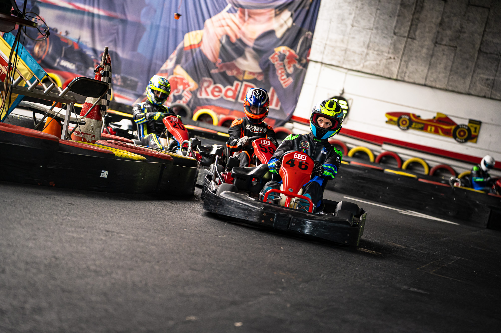

-
naam: Thies
Leeftijd: 19 jaar
-
woonplaats: Vlissingen
naam: Thies
Leeftijd: 19 jaar
woonplaats: Vlissingen
woonsituatie: Bij ouders
vooropleiding: VWO
profiel: NT
Ik heb niet eerder een HBO of universiteit afgerond
uitgevoerde studiekeuzeactiviteiten: studiekeuzecheck
hobby's/interesses: karten, simracen en Hyrox
Strengths: Ik kan goed opletten in de les en daarmee onthoud ik vaak veel van de lesstof.
Weaknessess: Ik heb wat concentratieproblemen doordat ik long covid heb, daardoor heb ik ook relatief veel slaap nodig.
Opportunities: Ik heb een breed netwerk aan mensen die me kunnen helpen als ik problemen ondervind of ergens hulp bij nodig heb.
Threats: Ik ben veel tijd kwijt aan sport en karten. Ik kart op hoog niveau waardoor ik ook naar het buitenland moet voor trainingen en wedstrijden en dus soms doordeweeks op schooldagen al weg moet. Dit is wel vaak van tevoren al bekend dus dat is hopelijk in te plannen.
Topsport: eigenljk wel maar ik heb geen officiële status
beperkende factoren: ja
toelichting: Ik heb extra tijd nodig bij toetsen en ik zou graag wat hulp willen om het karten en de studie te combineren want ik ben niet zo goed in plannen.
bijzondere regelingen: ja
link naar index 